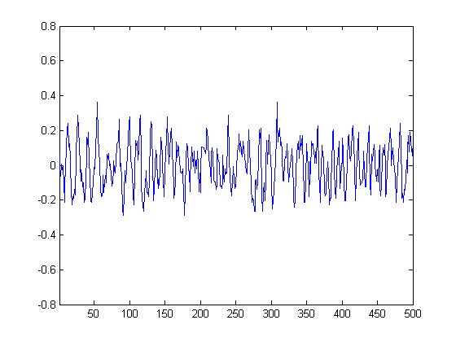

Handel Demo
In this demo, the data from HANDEL.MAT will be output to the sound card using a data acquisition analog output object. As the data is being output, the data will be displayed in the axes window.
Copyright 1998-2002 The MathWorks, Inc. $Revision: 1 $ $Date: 3/14/03 5:31p $
To begin, an analog output object associated with the winsound device is created. Two channels are then added to the analog output object, ao. This will allow the winsound device to run in stereo mode.
ao = analogoutput('winsound', 0);
addchannel(ao, [1 2]);HANDEL.MAT contains two variables:
y - the data that will be output to the sound card
Fs - the sample rate at which the data was originally sampled.
The data and sample rate are loaded from HANDEL.MAT into the MATLAB workspace.
load handel
The analog output object is configured to use the loaded sample rate.
set(ao, 'SampleRate', Fs);For the loaded data to be output, it must first be queued in the data acquisition engine with the PUTDATA command. The data being queued in the data acquisition engine must consist of a column of data for each channel of the analog output object.
data = [y y]; putdata(ao, data);
The analog output object and the data acquisition engine are started with the START command. Starting the output object means that the hardware device and the data acquisition engine are both running. Running does not necessarily mean that the data is being output. For data to be output, a trigger must occur. By default, an immediate trigger occurs as soon as the object is started.
startindex = 1; increment = 500; set(gcf, 'DoubleBuffer', 'on'); start(ao); % Draw a plot while the sound plays. while strcmp(ao.Running, 'On') while (ao.SamplesOutput < startindex + increment -1), end try x = ao.SamplesOutput; plot(y(x:x+increment-1)); set(gca, 'YLim', [-0.8 0.8], 'XLim',[1 increment]) drawnow; startindex = startindex+increment; end end
When the data has been output, the analog output object is stopped automatically. The analog output object should be deleted with the DELETE command to free memory and other physical resources.
delete(ao);